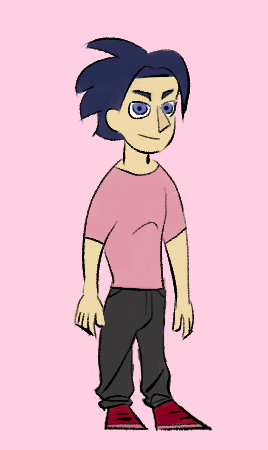

Aaron Merlo
Aaron is the eldest of Erdutza and Carlos's children. Unlike his siblings he did not inherit inate magical abilities from their mother but his knowledge on the machinations of the sprite world surpasses theirs.
| Contents |
|---|
| Appearance |
| Personality |
| Background |
| Powers and Abilities |
| Gallery |
| Aaron Merlo | |||||||||||||||||||||||||||||||||||
|---|---|---|---|---|---|---|---|---|---|---|---|---|---|---|---|---|---|---|---|---|---|---|---|---|---|---|---|---|---|---|---|---|---|---|---|
|  | |||||||||||||||||||||||||||||||||||
| Character Information | |||||||||||||||||||||||||||||||||||
| Full name: | Aaron Merlo |
| Status: | Alive |
| Other Names: |
Ronnie,
Jack, Snot, |
| Age: | 16 |
| Gender: | Male |
| Sexuality: | Questioning |
| Species: | Halfling |
| Occupation: | Student at Saint Elmo
Cadet/student for the Izarran enforcerment academy |
| Affiliations: | St.Elmo school,
The Starlight Court, The benefactor |
| Goal: |
Find out who the benefactor is,
Help his sister find out where the Moon parents are, |
| Home: | |
| Relatives: |
Beatriz (younger sister),
Eric (younger brother), Erdutza (mother), Carlos (late father), Zeru (uncle), Izar (aunt), Itzel (cousin), |
| Allies: |
Family,
The other Izarran cadets, |
| Enemies: | The Benefactor, |
| Likes: |
Music,
Fencing, |
| Dislikes: | |
| Powers and Abilities: | |
| Weapons: |
Appearance
Body
He's about 5'10 in stature, posesses a lean build(still fairly athletic). Aaron has black wavy hair that looks blue under some lighting. It's always messy. His eyes are a dark blue like his mother's.
Clothing
He's usually dressed in simple tshirts and loose jeans when not wearing his school uniform.
Personality
...
Background
Childhood
...
Present
...